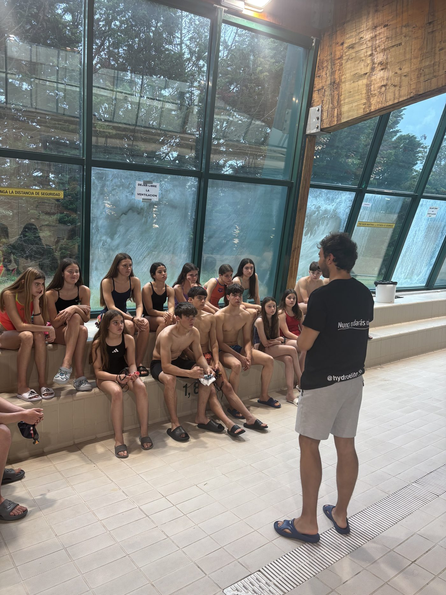
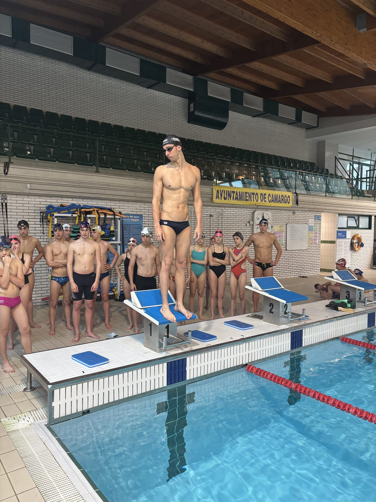
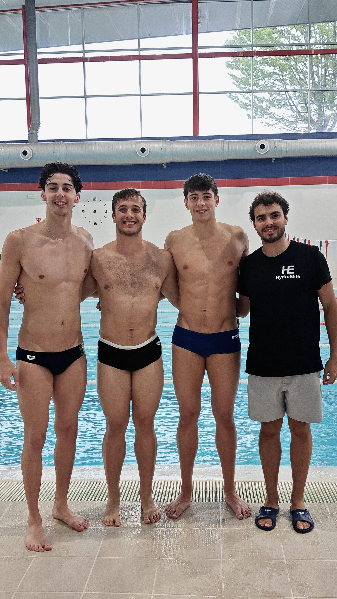
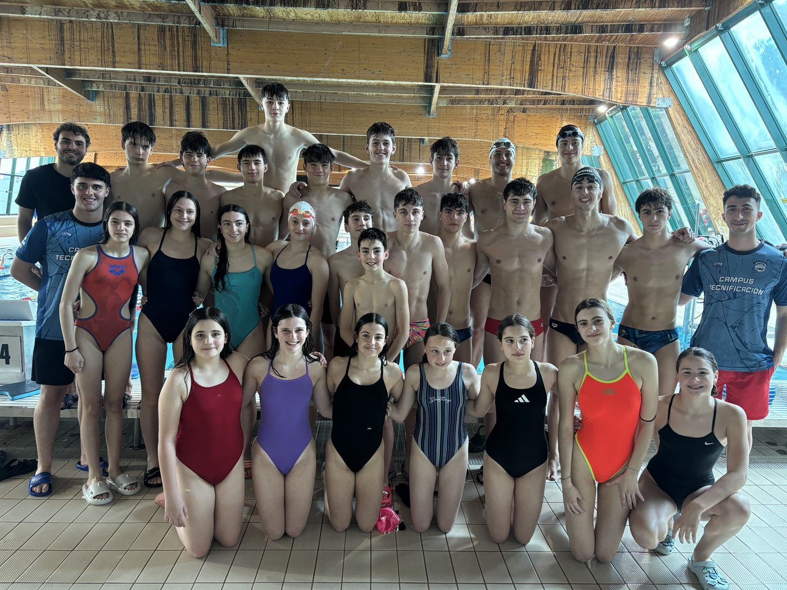

Hay una diferencia enorme entre participar en algo y ser el responsable de que ocurra. He estado en clínics, campus, concentraciones con federaciones, eventos de todo tipo. Siempre desde dentro, siempre aportando, siempre aprendiendo. Pero el 2 de mayo de 2026 fue diferente: por primera vez, el evento llevaba mi nombre. El de HydroElite.
Poco tiempo. Muchas ganas.
La idea tomó forma con poco margen. Organizar un clinic de natación implica coordinación logística, comunicación, inscripciones, instalaciones, material —y conseguir que venga gente con muy poco tiempo de antelación. Para que todo saliera adelante conté con Nardi y Gabi, dos entrenadores de Cantabria que se implicaron desde el primer momento, y con Marco, un joven entrenador que está dando sus primeros pasos en este mundo y al que acompaño como mentor. Sin los tres, esto no hubiera sido lo mismo.
Lo que no esperaba es la respuesta. Las plazas se llenaron. El grupo que se formó era bueno —técnicamente comprometido, con iniciativa, con ganas de aprender de verdad. Eso ya lo cambia todo.

Presentación inicial con el grupo · Piscina La Cross, Maliaño · 2 de mayo de 2026
Pero lo que convirtió este clinic en algo especial llegó desde Italia.
Tres nadadores que lo dieron todo
Simone Locchi, Davide Cremonini y Lorenzo Mancardo. Tres deportistas italianos que compiten en natación de salvamento y socorrismo, una disciplina que exige una combinación de potencia, técnica y control que pocos deportes demandan al mismo nivel. Los tres con un nivel técnico que se ve desde el primer momento que se meten al agua.

Simone Locchi ejecutando la demostración que yo acababa de explicar · Piscina La Cross
Vinieron a Cantabria para participar en el clinic y desde el primer momento entendieron exactamente cuál era su papel: apoyar, sumar y corregir. Yo dirigía las explicaciones, pero los tres estaban completamente volcados —completaban mis demostraciones, añadían matices desde su propia experiencia, corregían a los nadadores con criterio y precisión. En ningún momento fueron figuras decorativas. Fueron parte del equipo.
Esa combinación —mi dirección, su participación activa— creó una dinámica que el grupo captó enseguida. Los nadadores no solo escuchaban: preguntaban, probaban, volvían a preguntar.
Cuando alguien te dice al salir del agua que ha aprendido algo que lleva tiempo buscando, sabes que lo que estás haciendo tiene sentido.
Más allá de la piscina
Un clinic no termina cuando el grupo sale del agua. El fin de semana que compartimos con Simone, Davide y Lorenzo fue su primera vez en Cantabria. Les enseñé Santander, recorrimos la zona, hablamos de natación, de entrenamiento, de lo que cada uno está construyendo en su carrera.
Descubrir cómo entrena alguien que viene de otro país, de otra cultura deportiva, te obliga a cuestionar tus propios esquemas. Los tres tenían enfoques distintos entre sí, pero compartían algo: una disciplina técnica que no deja nada al azar. Eso me llevo.

Con Simone, Davide y Lorenzo al terminar el clinic
Y me llevo tres amigos. Porque eso es lo que son ya.
Lo que significa para HydroElite

El grupo entero al terminar · Clinic Salidas & Virajes · HydroElite · 2 de mayo de 2026
Organizar este clinic con poco tiempo, ver las plazas llenarse, ver al grupo trabajar con ese nivel de compromiso, y al final del día escuchar que la gente se ha ido contenta —eso tiene un valor que no se mide en números.
HydroElite no es solo un nombre. Es una forma de entender el trabajo en el agua: exigente, técnico, basado en lo que de verdad funciona. Este clinic ha sido la primera vez que eso toma forma como evento propio. Y no va a ser la última.
¿Qué te ha parecido? Cuéntamelo en Instagram — @coachsergiordonez
Nunca nadarás solo.
Si quieres participar en los próximos clínics o campus de HydroElite, escríbeme y te informo sin compromiso.
Contactar